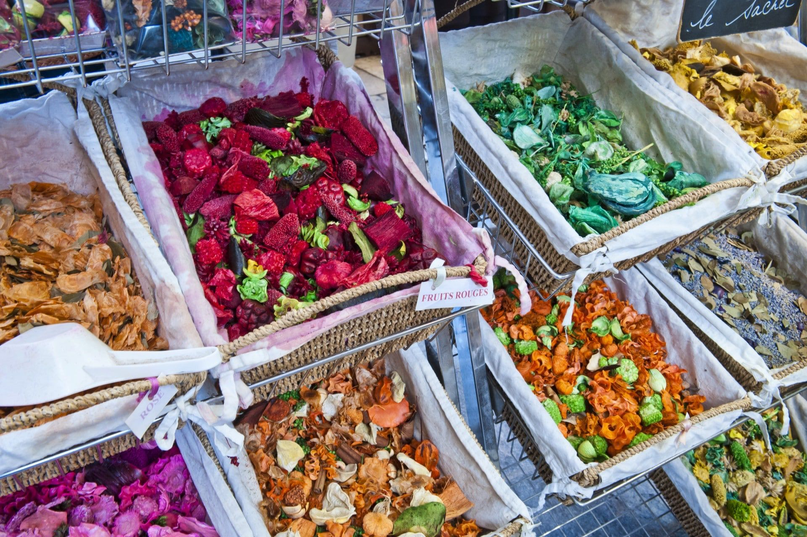

Shopping in Nizza
Einkaufen ist zweifellos eine der wichtigsten Touristenaktivitäten von Nizza. In Nizza können alle Arten von außergewöhnlichen Produkten gekauft werden, von Kleidung über Lebensmittel und Kunstwerke bis hin zu Antiquitäten. Auch die Preise können erheblich variieren, obwohl die lohnendsten Einkaufsbummel wahrscheinlich ein höheres Budget erfordern.
Unabhängig vom Budget können auch modebewusste Touristen, sowie populäre Kunst- und Antiquitätensammler in Nizza, einer Stadt mit scheinbar unerschöpflichen Gütern, glücklich werden. Auch ein Besuch auf den malerischen Märkte und in den kleinen raffinierten Boutiquen von Nizza ist sehr empfehlenswert.
Die Rue de France, die parallel zur Promenade des Anglais verläuft, ist eines der aufregendsten Erlebnisse für Modebegeisterte. Die Straße, die gleichzeitig eine der bemerkenswertesten Fußgängerzonen von Nizza umfasst, ist von exquisiten Boutiquen umgeben, die Haute Couture-Kleidung verkaufen. Für eine interessante Abwechslung können Touristen sich der vielen Restaurants und Cafés in der Rue de France erfreuen.
Was beim Einkaufen in Nizza etwas erleichternd ist, ist, dass sich die meisten der Veranstaltungsorte in einer Gegend befinden, d. h. im Zentrum der Stadt oder um sie herum. So bieten Avenue Jean Medecin, Rue Massena, Rue Paradis und Rue de Verdun den Neugierigen viele Möglichkeiten.
Shops in Nizza
Faconnable
Faconnable hat zwei Geschäfte in Nizza, eines ist auf den Verkauf von Herrenbekleidung spezialisiert und eines für Frauen und Männer. Beide befinden sich in der Rue Paradis.
Chanel Boutique
Neben der modischen Kleidung, den Schuhen und Accessoires, die man in der Chanel Boutique kaufen oder bewundern kann, können Sie sich dort auch die aktuellen Schmuck- und Parfümkollektionen ansehen.
Zara
Der Zara-Laden in Nizza befindet sich an der Avenue Jean Medecin, und seine Kollektionen bestehen aus Herren- und Damenbekleidung, sowie Kinderkleidung. Ein weiteres Geschäft befindet sich in der Nähe des Flughafens und ein weiteres Geschäft im benachbarten Saint Laurent du Var.
Hermes
Neben Kleidung verkauft Hermes auch Parfüm und Schmuck. Neben dem Geschäft in Nizza befinden sich zwei weitere Geschäfte an den beiden Terminals des Flughafens.
Märkte in Nizza:
Bei der Suche nach den Märkten in Nizza können Touristen alle Arten von Produkten kaufen, die von Antiquitäten und Kunstwerken bis hin zu Kleidung und Lebensmitteln reichen.
Place Robilante
Der Place Robilante befindet sich auf der Nordwestseite von Port de Nice, neben dem Quai Papacino. Es beherbergt das sogenannte Les Puces de Nice, einen Flohmarkt, auf dem Besucher in der angenehmen Atmosphäre des Hafens nach Antiquitäten suchen können. Dieser Flohmarkt findet von Dienstag bis Samstag zwischen 10 und 18 Uhr statt.
Cours Saleya
Cours Saleya ist die Heimat von drei bemerkenswerten Märkten. Der Blumenmarkt (Marche aux Fleurs) findet täglich, mit Ausnahme von Montags, statt. Wer diesen markt besichtigen möchte, sollte sich im Voraus über die Öffnungszeiten informieren, denn diese sind nicht fest. Der Cours Saleya hingegen findet zwischen 5.30 Uhr und 18 Uhr statt und wer Spaß an Flohmärkten hat wird sich auf dem Marche a la Brocante wohl fühlen.
Place du Palais
Der Secondhand-Buchmarkt (Marche aux Livres Anciennes ou d'Occasion), der am 1. und 3. Samstag im Monat stattfindet, zusammen mit dem Gemälde- und Handwerksmarkt (Marche Peintures et Artisans d'Art), der jeden 2. Samstag im Monat organisiert wird, finden beide auf der Place du Palais statt. Der Place du Palais ist jedoch die Heimat eines weiteren Marktes, nämlich des Alten Postkartenmarktes (Marche aux Cartes Postales Anciennes), der jeden 4. Samstag im Monat veranstaltet wird.
Abschließend lässt sich sagen, dass Nizza eine große Auswahl an Läden und Märkten für Shoppingbegeisterte bietet - es ist auf jeden Fall sinnvoll, sein Glück hier zu versuchen.